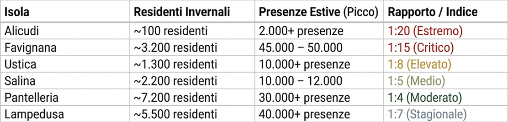

SOLITUDINE DEMOGRAFICA
Il divario estremo tra la vita dei residenti stabili invernali e l'esplosione demografica turistica estiva
INTRODUZIONE AL PROBLEMA
La contrazione demografica rappresenta uno dei tratti percettivi e sociali più marcati delle comunità insulari nei mesi freddi. Quando il flusso turistico si azzera, l'isola ritrova la sua dimensione minima: una comunità ristretta che affronta la discontinuità territoriale, l'assenza di servizi essenziali e l'isolamento marittimo
ANALISI COMPARATIVA
(INVERNO VS ESTATE)

APPROFONDIMENTO DINAMICHE LOCALI
Alicudi & Ustica
Spopolamento invernale giovanile legato all'assenza di strutture scolastiche e universitarie
Favignana & Pantelleria
Forte disoccupazione stagionale post-estiva e fluttuazione dell'indotto commerciale .
Salina
Tenuta della comunità grazie alla presenza delle scuole nei tre comuni
Lampedusa
Impatto dei presidi permanenti delle forze dell'ordine e indotto statale.